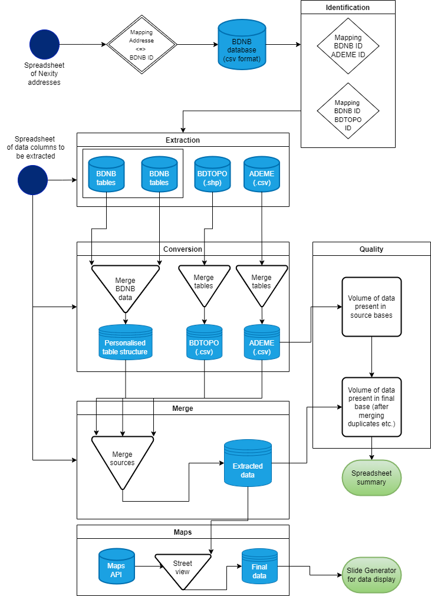

Usage#
Installation#
To use buildingdata, first install it by cloning the GitLab repository:
git clone https://git.sia-partners.com/john.levy/renovation-batiment
The proposed method to set-up the coding environment is to use anaconda. For this purpose in the root folder run:
conda env create -f conda_env.yml
Activate the environment that has been created:
conda activate buildingdata
Introduction to buildingdata#
Buildingdata is aimed to be a self-contained package that extracts selected data from the BDNB and other French open-data source. This page guides you through the basic usage of the package.
First, make sure you have downloaded the relevant BDNB tables in csv format and stored them in the data/source/bdnb folder.
Attention
The folder organisation displayed above is crucial to the good execution of the package. When the package is first downloaded, it will not contain any data files except for the data_selection.xlsx and some other utility files. Please DO NOT change the structure of the subdirectories of the tree presented above, except if you wish to modify the code accordingly.
If for some reason you have lost the structure of the data directory and wish to retrieve it as it should be, a folder to be downloaded can be found here.
Note
Be careful when trying to extract data for new addresses. Indeed, the BDTOPO and ADEME databases are organized by French departement number. Only relevant departements folders have been downloaded, so if you wish to study addresses from other departements than the ones that have been treated before you will need to download the corresponding data from the sources websites. Simply add the obtained folders in the data/source/<data_base_name>/ directory.
Second, complete the data_selection excel spreadsheet. This file is the backbone of the package. It is used to select the columns to be extracted as well as to create a new, personalised, database structure following complete data extraction. An example is shown below. The file is already created when you download the package with some example columns that can be extracted.
Third, save a csv file containing the perimeter of addresses you wish to study. Please make sure that the addresses are present in the BDNB otherwise the extraction will not work. Also note that the names of the colones are hard_coded in the function loading addresses, called load_addresses and located in the identification/addresses.py file. If you wish to use a csv with different column names please modify this function accordingly. The location of the address file is expected to be in the data/source/addresses directory. Modifiy the PATH_TO_ADDRESSES variable located in the __init__.py file of the root directory to match the name of your csv file.
Fourth, set-up the google maps API key located in the __init__.py file of the root directory to your google street view API key.
Once this is completed, run the main function of the main.py file of the package this can be done with the following code run from a jupyter notebook for example:
from buildingdata.main import main
main()
This function will follow the pipeline detailed below:
The results obtained from running the package can be seperated into three classes.
The extracted data
To work with the extracted data a get_columns function is provided. It allows you to extract only some of the columns retrieved from the open-data. The get columns function takes as argument a list of column names similar to the one that have been specified in the data_selection spreadsheet and the name of the file where you wish to store those columns. It is written in the main file of the package and can be used with the following import.
from buildingdata.main import get_columns
Note
This function assumes that the code has been run in full and that the extracted data is located in the data/merged directory. If it is not the case the function will not be able to load the file containing the extracted data, running the main function of the package again should solve the problem.
The data volume summary
A summary of the data volume is automatically generated when running the extraction of the columns specified in data_selection stored in the data/diagnostics directory. Data volume is computed before and after merging the columns with other open-data sources. The summary displays the data volume obtained after combining all possible sources, as well as the volume of data present in each source sperately.
The generated slides
A PowerPoint presentation is automatically generated when running the extraction of the columns specified in data_selection. A slide displaying the data according to the organisation specified in data_selection is automatically created for each address of the perimeter. Satellite images are obtained from the SolarBot presentation that must be placed in the data/ppt/sources. If you wish to use other images, add them to the data/ppt/images directory.
Because the queries to the google maps API are quite time consumming, the metadata (api status & query link to the image) are stored in the source/maps folder. Similarly, the streetview images are stored in the data/ppt/images/sw folder when first queried, so that they can be re-used in order to avoid paying multiple times for the same image.
Therefore, an integration of street view images in the slides is also possible but is not executed by default. To execute it run the generate_slides with the street_view argument set to True. This will first launch a request to the google maps API to retrieve the images associated to the links stored in the database if needed, and generate slides containing both the street view and staellite images.